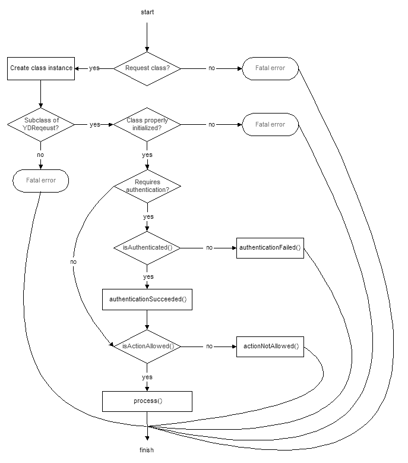

How requests are processed
Documentation table of contents
In this chapter, we will see how requests are processed. When you load a request from the browser, a lot of things are performed before the actual action is processed and the contents is displayed to the end user.
Graphical overview
The following diagram gives you a graphical overview of how requests are processed in the Yellow Duck Framework.

This whole process of handling a request is automatically done by the framework. There is no need to code this yourself. Of course, if you want, there are a number of things you can override in this workflow to make the framework do what you want it to do.
Where is this processing happening
When you load a file that includes the Yellow Duck Framework using the following code, the file will be able to use the functionality of the framework. Including the Yellow Duck Framework goes as follows:
require_once( 'YDFramework2/YDF2_init.php' );
To process the actual file using the framework, we need to add another include file, but we need to include this at the end of the script. The last line of every script processed with the Yellow Duck Framework should look as follows:
require_once( 'YDFramework2/YDF2_process.php' );
The process script is the one that does what is displayed in the image above. Without including this file, nothing will be executed from the script and you will probably end up with an empty page as the result.
Let's go over each step in the process to see how it works and what influence it has on the processing of the request.
Step 1 - Check for a request class
When you load a script, the first thing the framework will do is to check for a class which is named after the script file. The class name always has the same structure. It's basically the basename of the script file. Let's take a look at some examples:
- index.php -> index
- processing.php -> processing
- MyOwnScriptForProcessing?.php -> MyOwnScriptForProcessing?
If no class with the given name is declared, the execution will stop with a fatal error indicating this. The fatal error will also stop the execution of the script.
Note: Class names are case insensitive in the Yellow Duck Framework. However, we strongly suggest you to maintain the same case as in the filename.
Note: Also note that some characters are not allowed as a class name, and as such are not allowed in the filename. Especially characters like a dash (-), a dollar sign ($), ad sign (@) and an ampersand (&) are not allowed.
Step 2 - Is the request class derived from YDRequest?
The Yellow Duck Framework always expects that the request class has the YDRequest class as one of it's parent classes. This is needed because there are a number of standard functions from the YDRequest class that are always expected to be there.
You don't have to inherit from the YDRequest class directly. It's allowed to define your own request class based on the YDRequest class, and inherit from that class instead. You can do this to provide basic functionality to your request classes which is not available in the standard YDRequest class. You can also use this to change the way requests are processed so that you can tailor the framework to suit your needs.
If the YDRequest is not one of the parent classes from the request class, a fatal error is raised and the execution of the script will be stopped.
Step 3 - Is the request class properly initialized?
Inheriting from the YDRequest class is one thing, but it also needs to be initialized properly. In the class constructor, you need to make sure you call the function with the same name as the class name of the parent class to make sure the parent class is initialized properly. If you inherit from the YDRequest directly, you code will look as follows:
<?php
// Inherit from the YDRequest class
class indexRequest extends YDRequest {
// This is the class constructor for our class.
function indexRequest() {
// Initialize the parent class.
$this->YDRequest();
}
}
?>
If you would leave out the function call to YDRequest in the above class, a fatal error will be raised indicating that the YDRequest class was not properly initialized. The execution will stop at that moment.
If the YDRequest class was properly initialized, the framework will now create an instance of the request class. When instantiating, no parameters are passed to the class constructor of the request class.
Step 4 - Does this request requires authentication?
In every request class, you can enable authentication. If you enable authentication for a request class, the framework will execute certain functions to check if the authentication before the request is processed.
You can enable authentication in a request class by using the following code:
$this->setRequiresAuthentication( true );
It will then use the function "isAuthenticated" from the request class to find out if the user is already authenticated. If not, the function "authenticationFailed" is executed which can e.g. redirect to the login. page which takes care of the rest. After executing the "authenticationFailed" function, the execution of the script is stopped.
If the "isAuthenticated" function returns true, the class function "authenticationSucceeded" is executed, after which the execution of the request continues. This function can for example set a session variable indicating that we are logged in or can add an entry to the database.
Note: for an in depth look at how authentication is handled in the framework, please go through the chapter How to handle authentication.
Step 5 - Is the specified action allowed?
After the authentication tokens are checked, the framework will check if the specified action is allowed by calling the "isActionAllowed" function which returns a boolean indicating this. This function can for example limit certain actions to specific conditions such as the username.
If the "isActionAllowed" function returns false, the function called "actionNotAllowed" will be executed. By default, this function returns a fatal error indicating that the action is not allowed. You can override this function to make this work the way you want. After this function is executed, the processing of the request will stop.
In the "isActionAllowed" function, you can use the class function "getActionName" to get the name of the current action in lowercase. The action name is the same as what is specified with the do function in the URL. If no action is specified, the text "default" will be returned which always points to the default action.
Step 6 - Process the actual request
Now that all the different checks are performed, the process function of the request class is executed. This will figure out the right function name for the function for the specified action, and it will execute this function.
What if?
What if I want a different way to specify the actions?
If you want to specify a different way for the framework to determine the actions, you will need to override the "getActionName" function to make it determine the correct action name.
What if I want a different way of processing the actions?
You will have to override the "process" function of the request class for this. This will not change the way the different checks are happening though (which is not advised by any means).
Do you really need to stick to YDRequest
You might wonder if using the YDRequest class is the only way of working in the Yellow Duck Framework? Actually, it's not. You can use the Yellow Duck Framework in different ways. Most people will stick to the YDRequest class since it provides you with a very handy and very structured way of working.
Of course, by not including the YDF2_process.php file, you can use the Yellow Duck Framework in any PHP script you want without using the YDRequest class. Here's an example that compares the two ways of working.
Using the YDRequest class:
<?php
// Standard include
require_once( dirname( __FILE__ ) . '/../YDFramework2/YDF2_init.php' );
// Includes
require_once( 'YDRequest.php' );
require_once( 'YDBBCode.php' );
require_once( 'YDFSFile.php' );
// Class definition
class bbcode extends YDRequest {
// Class constructor
function bbcode() {
$this->YDRequest();
}
// Default action
function actionDefault() {
// The original data
$file = new YDFSFile( 'bbcode.txt' );
$data = $file->getContents();
// The converter
$conv = new YDBBCode();
// Show the converted data
echo( '<pre>' . htmlentities( $data ) . '</pre>' );
echo( '<pre>' . htmlentities( $conv->toHtml( $data ) ) . '</pre>' );
echo( '<p>' . $conv->toHtml( $data ) . '</p>' );
}
}
// Process the request
require_once( dirname( __FILE__ ) . '/../YDFramework2/YDF2_process.php' );
?>
Not using the YDRequest class:
<?php
// Standard include
require_once( dirname( __FILE__ ) . '/../YDFramework2/YDF2_init.php' );
// Includes
require_once( 'YDRequest.php' );
require_once( 'YDBBCode.php' );
require_once( 'YDFSFile.php' );
// The original data
$file = new YDFSFile( 'bbcode.txt' );
$data = $file->getContents();
// The converter
$conv = new YDBBCode();
// Show the converted data
echo( '<pre>' . htmlentities( $data ) . '</pre>' );
echo( '<pre>' . htmlentities( $conv->toHtml( $data ) ) . '</pre>' );
echo( '<p>' . $conv->toHtml( $data ) . '</p>' );
?>
Both ways yield the same output, but the second way of working has some disadvantages:
- You are no longer able to use the integrated authentication of the framework.
- It's a lot more work and not as straightforward to use the different actions in the same request file.
- Since the second example is not using object-oriented principles, there is no way to define a base request class with common functionality that is always used in the different scripts of your application.
I would strongly advise to use the YDRequest class whenever possible. The YDRequest class can easily be extended so that it behaves exactly the way you want, so there should not be any limitation in how the class works.